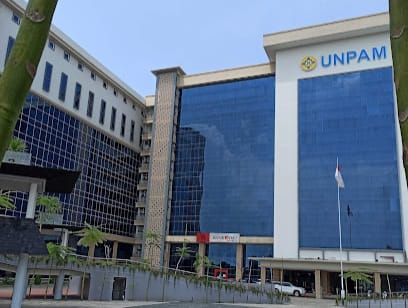
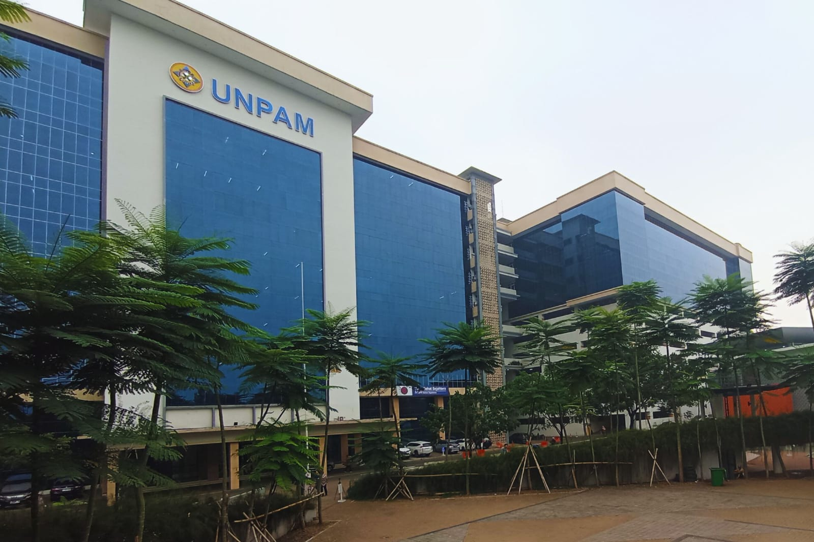

UJIAN UAS SEMESTER 1 2025


DESKRIPSI SINGKAT MATAKULIAH


aplikasi web menggunakan HTML, CSS, dan JavaScript. Mahasiswa akan mempelajari pembuatan
halaman web statis maupun dinamis, struktur dokumen HTML, desain antarmuka dengan CSS,
serta interaktivitas menggunakan JavaScript.Mata kuliah ini diikuti oleh M. Senda Al Rafli,
yang sedang mengembangkan proyek website Senda Rental sebagai bagian dari tugas akhir
semester. Jika kamu ingin deskripsi lebih pendek, bisa gunakan versi ini: Mata kuliah
Pemrograman Web mengajarkan dasar-dasar pembuatan website menggunakan HTML, CSS, dan JavaScript.
Proyek ini dibuat oleh M. Senda Al Rafli sebagai Ujian UAS 2025 semester 1.